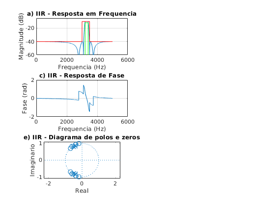
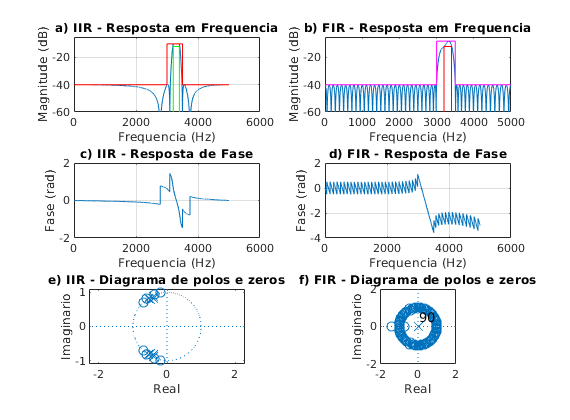

Contents
% Projeto filtro 3 IIR - Chebyshev 2 % BP - (fa = 10000 Hz, f1 = 3000 Hz; f2 = 3200 Hz, f3 = 3400 Hz; % f4 = 3500 Hz, Ap = 2 dB, As = 30 dB, GdB = -10 dB) close all; clear all; clc; ExecutarAjuste = 1;
Especificacoes
Ap = 2; As = 30; GdB = -10; fa_espec = 10000; wa_espec = 2*pi*fa_espec; fp1_espec = 3200; fp2_espec = 3400; fs1_espec = 3000; fs2_espec = 3500; wp1_espec = 2*pi*fp1_espec; wp2_espec = 2*pi*fp2_espec; ws1_espec = 2*pi*fs1_espec; ws2_espec = 2*pi*fs2_espec; tetha_p1_espec = wp1_espec/(wa_espec/2); tetha_p2_espec = wp2_espec/(wa_espec/2); tetha_s1_espec = ws1_espec/(wa_espec/2); tetha_s2_espec = ws2_espec/(wa_espec/2); lambda_p1_espec = 2*tan(tetha_p1_espec * pi/2); lambda_p2_espec = 2*tan(tetha_p2_espec * pi/2); lambda_s1_espec = 2*tan(tetha_s1_espec * pi/2); lambda_s2_espec = 2*tan(tetha_s2_espec * pi/2); lambda_0 = sqrt(lambda_p2_espec*lambda_p1_espec); Bwp = lambda_p2_espec - lambda_p1_espec; Os1 = abs((lambda_0^2 - lambda_s1_espec^2)/(Bwp*lambda_s1_espec)); Os2 = abs((lambda_0^2 - lambda_s2_espec^2)/(Bwp*lambda_s2_espec)); Os_espec = min(Os1, Os2); Op_espec = 1; G0 = 10^(GdB/20); % Ajustes delta_fp1 = 0; delta_fp2 = 0; delta_fs1 = 0; delta_fs2 = 0; if ExecutarAjuste delta_fp2 = (3423-fp2_espec)/2; end fa_ajust = fa_espec; fp1_ajust = fp1_espec + delta_fp1; fp2_ajust = fp2_espec + delta_fp2; fs1_ajust = fs1_espec + delta_fs1; fs2_ajust = fs2_espec + delta_fs2; wa_ajust = wa_espec; wp1_ajust = 2*pi*fp1_ajust; wp2_ajust = 2*pi*fp2_ajust; ws1_ajust = 2*pi*fs1_ajust; ws2_ajust = 2*pi*fs2_ajust; tetha_p1_ajust = wp1_ajust/(wa_ajust/2); tetha_p2_ajust = wp2_ajust/(wa_ajust/2); tetha_s1_ajust = ws1_ajust/(wa_ajust/2); tetha_s2_ajust = ws2_ajust/(wa_ajust/2); lambda_p1_ajust = 2*tan(tetha_p1_ajust * pi/2); lambda_p2_ajust = 2*tan(tetha_p2_ajust * pi/2); lambda_s1_ajust = 2*tan(tetha_s1_ajust * pi/2); lambda_s2_ajust = 2*tan(tetha_s2_ajust * pi/2); lambda_0_ajust = sqrt(lambda_p2_ajust*lambda_p1_ajust); Bwp_ajust = lambda_p2_ajust - lambda_p1_ajust; Os1_ajust = abs((lambda_0_ajust^2 - lambda_s1_ajust^2)/(Bwp_ajust*lambda_s1_ajust)); Os2_ajust = abs((lambda_0_ajust^2 - lambda_s2_ajust^2)/(Bwp_ajust*lambda_s2_ajust)); Os_ajust = min(Os1_ajust, Os2_ajust); Op_ajust = 1; Os = Os_ajust; Op = Op_ajust; fa = fa_espec;
Chebyshev II
n = cheb2ord(Op, Os, Ap, As,'s'); [b, a] = cheby2(n,As, Os, 's'); b = b*G0; Ap = Ap - GdB; As = As - GdB;
Transformacao de frequencia
LP para BP
syms p; Np(p) = poly2sym(b, p); Dp(p) = poly2sym(a, p); Hp(p) = Np(p) / Dp(p); pretty(vpa(collect(Hp(p)), 5)) % Normalizando de acordo com p^n syms s; eq = (s^2 + lambda_0^2)/s/Bwp; Hs(s) = collect(subs(Hp(p), eq)); pretty(vpa(Hs(s), 3)) [N, D] = numden(Hs(s)); bs = sym2poly(N); as = sym2poly(D); an = as(1); bsn = bs/an; asn = as/an; Hsn(s) = poly2sym(bsn, s)/poly2sym(asn, s); pretty(vpa(Hsn(s), 5))
32 4 17 3 33 2 17
(3.2452 10 p - 1.2256 10 p + 9.2828 10 p + 9.4407 10 p
34 34 4 35 3 35 2
+ 3.3192 10 )/(3.2452 10 p + 1.083 10 p + 1.8163 10 p
35 35
+ 1.7879 10 p + 1.0496 10 )
92 8 76 7 93 6 77 5 95 4
(1.3 10 s - 2.4 10 s + 6.86 10 s - 7.8 10 s + 1.24 10 s
78 3 95 2 79 96 94 8
- 8.95 10 s + 9.02 10 s - 3.61 10 s + 2.25 10 )/(1.3 10 s
94 7 95 6 95 5 97 4
+ 2.12 10 s + 6.15 10 s + 7.36 10 s + 1.07 10 s
96 3 97 2 97 98
+ 8.44 10 s + 8.09 10 s + 3.19 10 s + 2.25 10 )
8 -18 7 6 -17 5 4
(0.01 s - 1.8373 10 s + 0.5263 s - 5.9845 10 s + 9.4966 s
-16 3 2 -15 8
- 6.8613 10 s + 69.182 s - 2.7689 10 s + 172.79)/(s
7 6 5 4 3 2
+ 1.6235 s + 47.185 s + 56.475 s + 819.25 s + 647.49 s + 6202.4 s
+ 2446.7 s + 17279.0)
Transformando em Z (bilinear)
syms z;
aux = 2*((z-1)/(z+1));
Hz(z) = collect(subs(Hs(s), aux));
pretty(vpa(Hz(z),3))
[Nz,Dz] = numden(Hz(z));
bz = sym2poly(Nz);
az = sym2poly(Dz);
an = az(1);
bzn = bz/an;
azn = az/an;
Hzn(z) = poly2sym(bzn,z) / poly2sym(azn,z);
pretty(vpa(Hzn(z),5))
96 8 97 7 97 6 97 5 97 4
(4.16 10 z + 1.52 10 z + 3.61 10 z + 5.58 10 z + 6.57 10 z
97 3 97 2 97 96 98 8
+ 5.58 10 z + 3.61 10 z + 1.52 10 z + 4.16 10 )/(4.6 10 z
99 7 99 6 99 5 99 4 99 3
+ 1.68 10 z + 3.96 10 z + 5.94 10 z + 6.7 10 z + 5.35 10 z
99 2 99 98
+ 3.21 10 z + 1.23 10 z + 3.02 10 )
8 7 6 5 4
(0.0090377 z + 0.033078 z + 0.078565 z + 0.12132 z + 0.14288 z
3 2 8
+ 0.12132 z + 0.078565 z + 0.033078 z + 0.0090377)/(z
7 6 5 4 3 2
+ 3.6593 z + 8.6068 z + 12.918 z + 14.566 z + 11.632 z + 6.9786 z
+ 2.6712 z + 0.65736)
Inicio PLOT (filtro IIR)
figure(1) subplot(321) escala = fa/2; [hz, wz] = freqz(bzn, azn, linspace(0, pi, 10000)); plot(wz/pi*escala, 20*log10(abs(hz))); ylim([-60 -5]) title('a) IIR - Resposta em Frequencia') grid on hold on plot([0,fs1_espec,fs1_espec,fs2_espec, fs2_espec, 5000],[-As,-As,GdB,GdB,-As,-As], 'r') plot([fp1_espec,fp1_espec,fp2_espec, fp2_espec],[-60,-Ap,-Ap,-60], 'g') xlabel('Frequencia (Hz)'); ylabel('Magnitude (dB)'); subplot(323) plot(wz/pi*escala, unwrap(angle(hz))/pi); grid on; title('c) IIR - Resposta de Fase') xlabel('Frequencia (Hz)'); ylabel('Fase (rad)'); subplot(325) zplane(bzn, azn); title('e) IIR - Diagrama de polos e zeros') xlabel('Real'); ylabel('Imaginario');
Calculos filtro FIR
% Projeto filtro 3 FIR PM % BP - (fa = 10000 Hz, f1 = 3000 Hz; f2 = 3200 Hz, f3 = 3400 Hz; % f4 = 3500 Hz, Ap = 2 dB, As = 30 dB, GdB = -10 dB) clear all; ExecutarAjuste = 1;
Especificacoes
Ap = 2; As = 30; GdB = -10; fa = 10000; fp1 = 3200; fp2 = 3400; fs1 = 3000; fs2 = 3500; fcuts = [fs1 fp1 fp2 fs2]; w = fcuts/fa*(2*pi); ws1 = w(1)/pi; wp1 = w(2)/pi; wp2 = w(3)/pi; ws2 = w(4)/pi; mags = [0 1 0]; devs_As = 10^(-(As+1.6)/20); devs_Ap = 1-10^(-Ap/20); devs = [devs_As devs_Ap devs_As]; G0 = GdB; % calculo da ordem com firpmord fcuts = fcuts + [0 -15 10 0]; [n,f0,a0,w0] = firpmord(fcuts,mags,devs,fa); % calculo algoritmo PM h_pm = firpm(n,f0,a0,w0); h_pm = h_pm*10^(G0/20);
subplot(322) escala = fa/2; [h, w] = freqz(h_pm, 1, linspace(0,pi,10000)); plot(w*fa/2/pi,20*log10(abs(h))) hold on; title('b) FIR - Resposta em Frequencia') ylim([-60 -5]) Amin = 80; As = As - G0; Ap = Ap + G0; plot([wp1, wp1, wp2, wp2]*fa/2, [-Amin, Ap-4, Ap-4, -Amin], '-r') plot([0, ws1, ws1, ws2, ws2, 1]*fa/2, [-As, -As, Ap, Ap, -As,-As], '-m') xlim([0 fa/2]) xlabel('Frequencia (Hz)'); ylabel('Magnitude (dB)'); subplot(324) plot(w/pi*escala, unwrap(angle(h))/pi); grid on; title('d) FIR - Resposta de Fase') xlabel('Frequencia (Hz)'); ylabel('Fase (rad)'); subplot(326) zplane(h_pm, 1); axis([-2 2 -2 2]) title('f) FIR - Diagrama de polos e zeros') xlabel('Real'); ylabel('Imaginario');